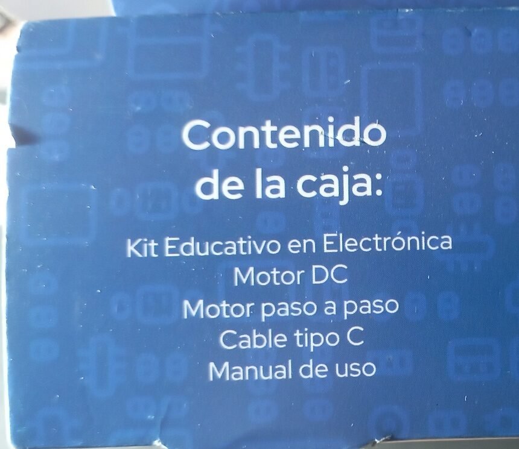
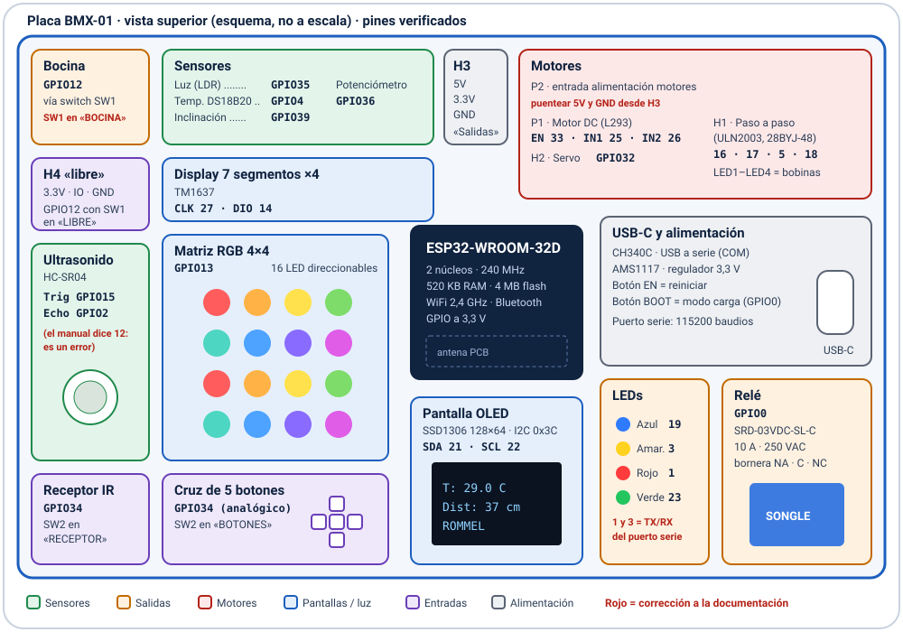
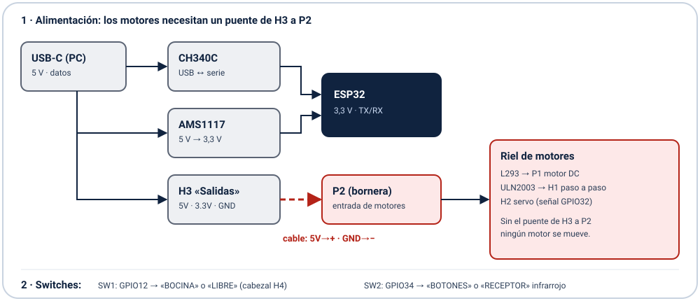

¿Qué es este kit?
El Kit Educativo en Electrónica lo distribuye gratuitamente el programa Semilleros Científicos del Ministerio del Poder Popular para Ciencia y Tecnología (Mincyt) y la Gran Misión Ciencia, Tecnología e Innovación. Su corazón es la placa BMX-01, fabricada en Venezuela por Sistemas Tecnológicos, que trae un ESP32 y todos los periféricos ya soldados: solo hace falta un cable USB-C.
Programar
Arduino (C/C++) o MicroPython, con resultados visibles al instante: luces, sonido, pantallas y movimiento.
Entender la electrónica
Entradas y salidas digitales, señales analógicas, PWM, buses I2C y 1-Wire, relés y motores.
Conectar al mundo
WiFi y Bluetooth para hacer estaciones meteorológicas, domótica y control desde el teléfono.
Hacer ciencia
Medir temperatura, luz y distancia, guardar los datos y graficarlos en clase.

En la caja
- Placa BMX-01 (Kit Educativo en Electrónica)
- Motor DC
- Motor paso a paso 28BYJ-48
- Cable USB tipo C
- Manual de uso (tarjeta con la leyenda de pines)
Material educativo gratuito: prohibida su venta.
Características
Todo lo que trae la placa, agrupado por función.
🧠 Cerebro
ESP32-WROOM-32D · 2 núcleos a 240 MHz · 520 KB de RAM · 4 MB de flash · WiFi y Bluetooth (clásico y BLE)
🔌 USB y energía
USB-C con CH340C (puerto COM) · regulador AMS1117 de 3,3 V · botones EN y BOOT
🖥 Pantallas
OLED de 128×64 (I2C) · display de 7 segmentos ×4 (TM1637) · matriz RGB 4×4 · 4 LED de colores
🌡 Sensores
Temperatura DS18B20 · luz (LDR) · inclinación · potenciómetro · ultrasonido HC-SR04 · receptor infrarrojo
🔊 Salidas
Bocina · relé de 10 A / 250 VAC · cabezal H4 para tus propios circuitos
⚙ Motores
Motor DC con L293 · paso a paso con ULN2003 · conector para servo
🎮 Entradas
Cruz de 5 botones en un solo pin analógico (compartido con el receptor IR)
🧪 Probado
Cada pin se verificó con el programa de diagnóstico de este proyecto. Se encontraron y corrigieron 3 erratas.
Fotos
Toca una foto para verla en grande.
Diagramas
Mapa de la placa con los pines GPIO comprobados, y cómo se alimentan los motores. En rojo, lo que corrige o completa la documentación original.


Mapa de pines verificado
Comprobado uno por uno sobre la placa real. corrección marca las diferencias con la documentación.
| Periférico | GPIO | Notas |
|---|---|---|
| LED azul / verde | 19 / 23 | |
| LED rojo / amarillo | 1 / 3 | Son TX y RX del puerto serie |
| Bocina | 12 | corrección Solo con el switch SW1 en «BOCINA» |
| Relé | 0 | Pin de arranque: puede hacer clic al reiniciar |
| Matriz RGB 4×4 | 13 | 16 LED en zigzag |
| Pantalla OLED | SDA 21 · SCL 22 | SSD1306, dirección I2C 0x3C |
| Display de 7 segmentos | CLK 27 · DIO 14 | TM1637 |
| Temperatura | 4 | DS18B20 digital (1-Wire) |
| Inclinación · Luz · Potenciómetro | 39 · 35 · 36 | Luz y potenciómetro son analógicos (0–4095) |
| Ultrasonido HC-SR04 | Trig 15 · Echo 2 | corrección El manual dice Echo 12 |
| Botones / receptor IR | 34 | Se elige con el switch SW2 |
| Motor paso a paso | 16 · 17 · 5 · 18 | ULN2003 → conector H1 |
| Motor DC | EN 33 · IN 25 / 26 | L293 → bornera P1 |
| Servo | 32 | Conector H2 |
| Alimentación de los motores | — | corrección Puentear 5V y GND de H3 a P2 |
Primeros pasos
De la caja al primer LED parpadeando en unos 15 minutos.
- Instala Arduino IDE 2. Si Windows no reconoce la placa, instala el controlador CH340.
- En Preferencias, agrega la URL de placas de Espressif e instala esp32 (3.x) desde el Gestor de placas.
- Elige la placa ESP32 Dev Module y el puerto COM de la placa.
- Abre
ejemplos/01_parpadeoy pulsa Subir. ¡El LED azul parpadea! - Para los motores: puentea 5V y GND de H3 a P2. Para la bocina: SW1 en «BOCINA».
// 01 · Parpadeo: LED azul en GPIO19
const int LED_AZUL = 19;
void setup() {
pinMode(LED_AZUL, OUTPUT);
}
void loop() {
digitalWrite(LED_AZUL, HIGH);
delay(500);
digitalWrite(LED_AZUL, LOW);
delay(500);
}URL de placas: https://espressif.github.io/arduino-esp32/package_esp32_index.json
Ejemplos incluidos
| Ejemplo | Qué hace | Aprendes |
|---|---|---|
01_parpadeo | Hace parpadear el LED azul | Salidas digitales |
02_potenciometro_led | El potenciómetro regula el brillo del LED verde | Lectura analógica y PWM |
03_bocina_melodia | Toca Do-Re-Mi… | Tonos |
04_temperatura_oled | Termómetro en la pantalla OLED | Buses 1-Wire e I2C |
05_distancia_7seg | Medidor de distancia en el display | Ultrasonido |
06_servo_potenciometro | El servo sigue al potenciómetro | Pulsos de servo |
07_matriz_arcoiris | Arcoíris animado en la matriz | LED direccionables |
Programa de diagnóstico
diagnostico_bmx01/ prueba toda la placa: 15 pruebas automáticas, un menú por el monitor serie, el monitor de sensores en vivo, nombres que pasan por la matriz y el display, un sensor de estacionamiento, un juego con los botones y una página web de control desde el teléfono (red WiFi BMX01-Diagnostico).
Descargas
Guía de usuario del kit BMX-01
18 páginas: características, mapa de pines, instalación, ejemplos, diagnóstico, solución de problemas y erratas.
Todo el proyecto
Programa de diagnóstico, 7 ejemplos, herramientas, bitácora de trabajo y diagramas.